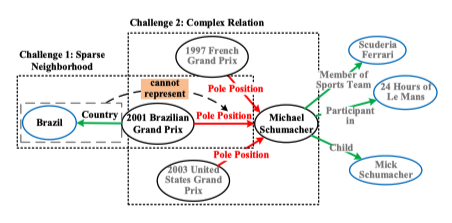
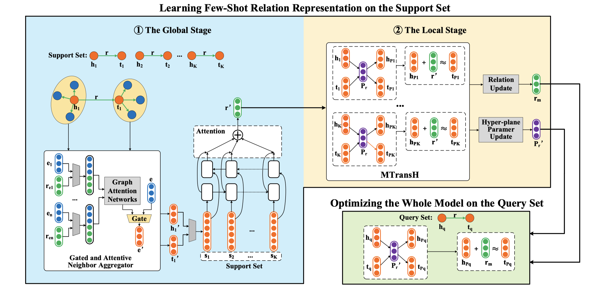
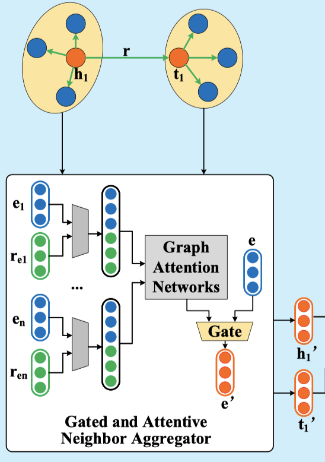
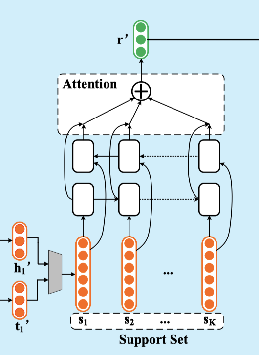
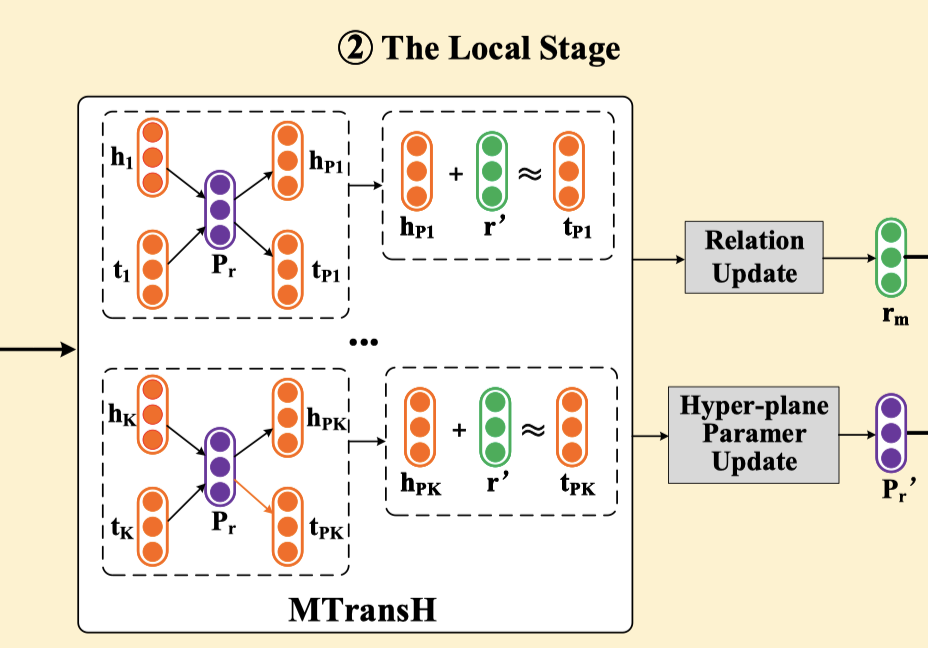
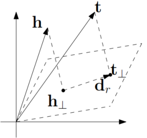
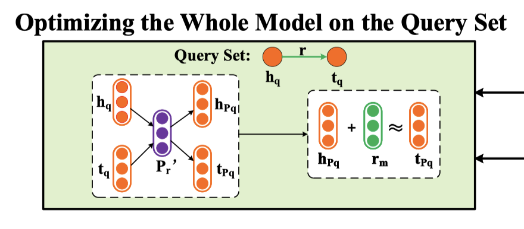
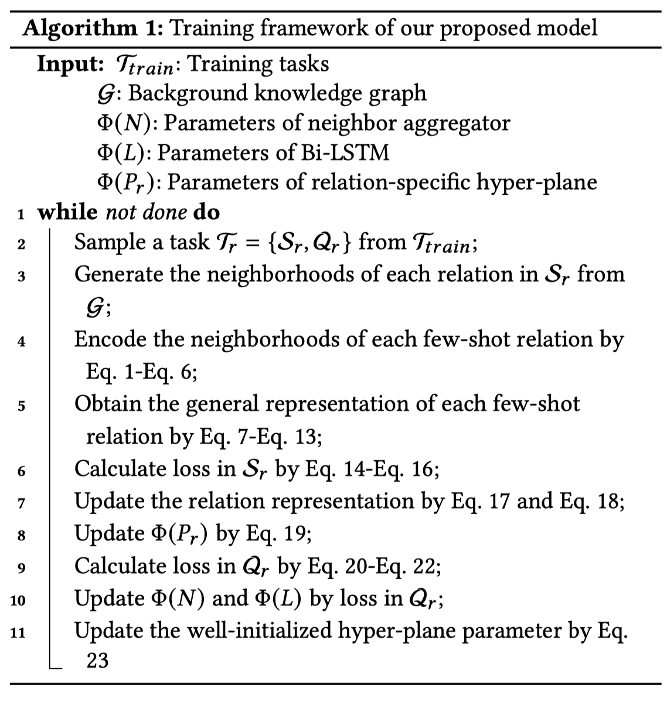
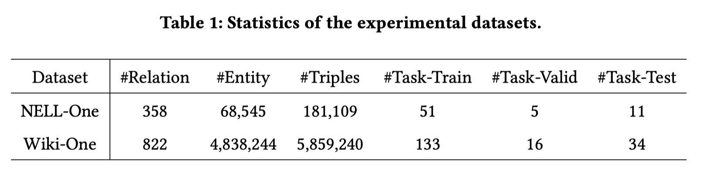
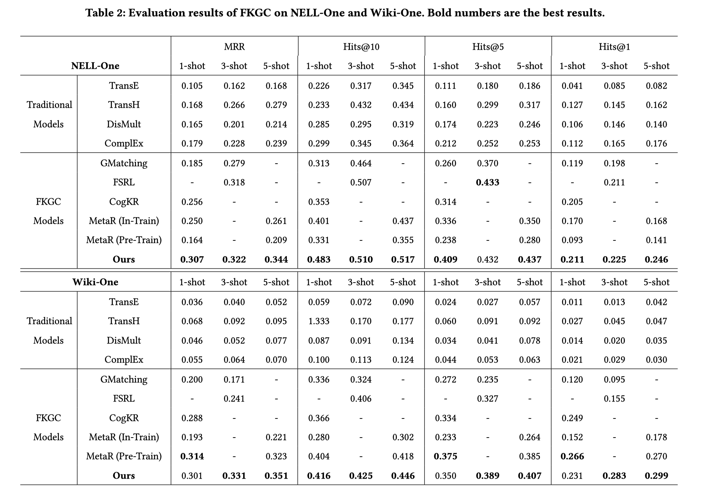

SIGIR2021:通过门控注意力邻域聚合器进行FKGC
本文最后更新于：1 小时前
问题引入

如图，红色线表示小样本关系（few-shot relation），绿色的边缘代表邻居关系。根据实例，本文提出了两个challenge：
- 对于小样本关系Pole Position，头部实体只有一个邻居并且无法表示关系Pole Position。因此，稀疏的领域会带来噪声。从而无法表示小样本关系。（稀疏领域）
- 小样本关系Pole Position是N-1的关系。由于特定于N-1关系的头部实体的不确定性，所以预测头部实体的结果不会特别准确。 （复杂关系）
贡献
- 提出了门控注意力邻居聚合器来捕获小样本关系中最有价值的上下文语义。
- 首先将MAML和TransH结合起来进行小样本知识图谱补全，提出的模型也能同时考虑到1-N，N-1和N-N的复杂关系
- 在设定的数据集上取得了良好的效果。
方法介绍

我们首先根据提出的两阶段表示学习机制学习支持集上三元组的小样本关系表示(few-shot relation representation)，然后通过查询集中的三元组优化整个模型。
Global Stage: General Representation
Gated and Attentive Neighbor Aggregator

这部分是受图注意力网络（GAT）的启发，用来捕获单个实体的不同邻居实体对其的影响，来提高实体编码的质量。对实体e的关系和邻居节点$(r_i,e_i)\in N_e$获取注意力值如下：
$\mathbf{W}{1}$是线性变换矩阵，$\mathbf{U}{1}$是权重矩阵然后通过LeakyReLU激活函数获得不同邻居的注意力值。然后使用softmax函数将获取到的注意力值和每个邻居都联系起来：
为了消除在表示小样本关系时，由于稀疏邻域导致的噪声邻居实体的影响，作者采用了门值g来自动确定激活实体e的邻居实体的程度（degree）：
基于门控机制，通过组合头部或尾部实体e的邻域表示及其实体嵌入来获得小样本关系r的一半邻域的表示（指代为h’或t’）：
$\mathbf{W}_2$表示权重矩阵，$\mathbf{b}$是偏置的矢量参数。 获得h’和t’之后，通过拼接操作获得领域表示s：$\mathbf{s}=\left[\mathbf{h}^{\prime} ; \mathbf{t}^{\prime}\right]$
Generating the Few-shot Relation Representation
MetaR通过仅对支持集中所有实体对的关系元取平均来表示小样本关系，而在表示一种小样本关系时忽略了支持集中所有实体对的不同影响。
本文引入了一种注意力机制的Bi-LSTM编码器，用于在支持集中集成一种小样本关系的多个邻域表示，可用于学习一种小样本关系的一般表示。

具体地，从等式导出邻域表示。依次将上个环节中的领域表示$\mathbf{s}_{i}^{K}$送入注意力机制的Bi-LSTM中，其中𝐾是支持集的大小。 双向Bi-LSTM的正向和反向隐状态的计算方式如下：
最终的隐状态可以通过两个方向隐状态拼接再做一个线性变换得到：
然后再使用注意力机制计算各个隐状态的权重：
最后通过整合支持集中来自𝐾个三元组的所有邻域表示来表示小样本关系的一般表示r’。 得到Bi-LSTM的最后隐状态：
Local Stage: MTransH
本文旨在考虑1-N、N-1和N-N的复杂关系的同时，更新局部阶段小样本关系的表示。

transH模型示意图如下：

受典型的KGE模型TransH的启发，该模型可以建模复杂的关系，三元组$(h_i,r,t_i)$的分数函数定义为：
其中$h_i$和$t_i$是在预训练中学习到的头部和尾部嵌入。 $P_r$是关于𝑟的超平面的法向量。 r’是从等式推导的小样本关系的一般表示。这部分得到一个损失函数如下：
然后计算r’的梯度：
然后通过学习率为$l$的随机梯度下降更新：
通过模型无关元学习(model agnostic meta learning—MAML)方法能够学习每个小样本关系的超平面参数$Pr$。对于任务$T_r$上的超平面参数$P_r$，当适应新任务$T{r’}$时，超平面参数变为$P’_{r}$。 在MAML之后，更新的参数是由当前任务$S_r$的支持集上的一个（或某些）梯度下降更新来计算的。 例如，参数$P_r$可以通过单个梯度步骤以学习速率𝑙进行更新，如下所示：
当我们在当前任务上获得更新的关系表示和超平面参数时，会将它们传输到查询集(Query Set)中的实例。

采用和支持集上相同的方式，可以通过以下方式获得查询集的得分和损失：
此外，我们可以在任务𝑇的查询集上评估更新的超平面参数$P’_r$。 同时，初始化良好的超平面参数$P^*_r$可以计算如下：
训练流程

实验
数据集

实验结果

本博客所有文章除特别声明外，均采用 CC BY-SA 4.0 协议 ，转载请注明出处！